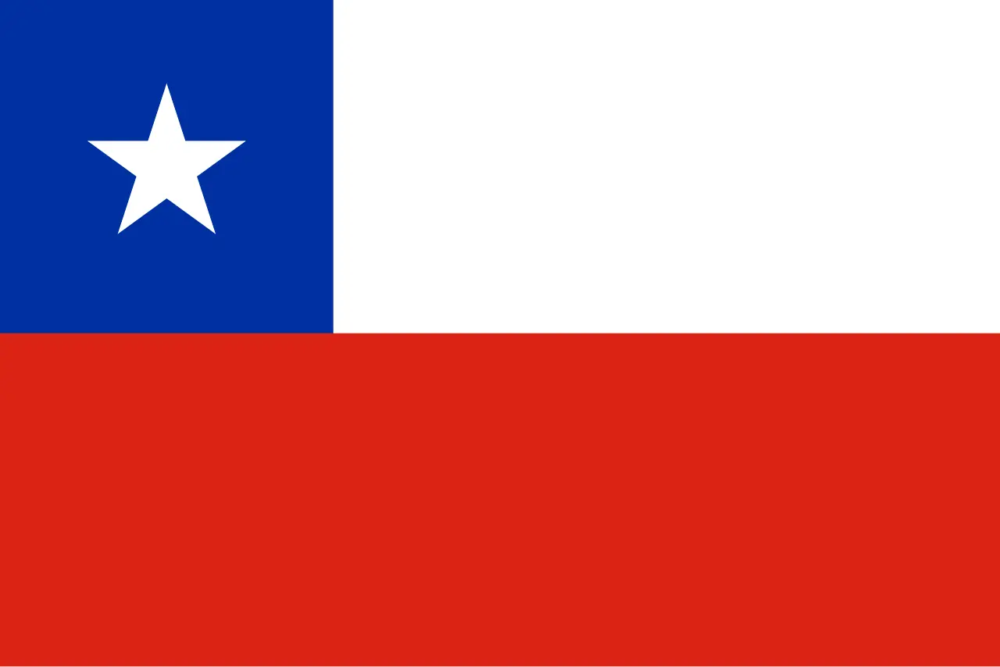

About me
I am Yufni, and I am from Chile. I like many things, like piano, movies, and food! I was born October 23rd, 2002 in a city called "La Serena." I went to school and started playing the piano win my mid-teenage years, which would eventually lead me to winning the 3rd place of a 2018 national piano competition. When I turned 16, my mother and I moved to the US to live with my oldest sister and her family in Texas. After living 2 years in that state, my family decided to move to Arizona, where almost instantly I got to meet my now wife. After playing the cat and mouse game with her, we both went on our own separate LDS missions for the years 2022 and 2023. I was part of the California, Los Angeles Mission where I was able to teach and preach the Gospel to the latino population of the city. This was an amazing time. Day after day I would see miracles as my companions and I prayed to find people to teach and serve. Studying the scriptures and deeping my knowledge and understanding of Jesus Christ's Atonement was also a highlight of my time in LA. After finishing my mission, I was able to come back home and finally marry the love of my life, who is now pregnant with our first child.
La Serena, Chile
Chile, a long and narrow country stretching along the western edge of South America, is celebrated for its dramatic landscapes, rich history, and vibrant culture. Spanning over 4,300 kilometers from north to south, it is bordered by the Pacific Ocean to the west and the Andes Mountains to the east. Despite its length, Chile averages only 177 kilometers in width, creating a unique geography that hosts an incredible variety of climates and ecosystems. Chile's people, known as Chileans, are a blend of indigenous and European ancestries. Spanish is the official language, and the cuisine features hearty dishes like empanadas and asado, as well as seafood, reflecting the country's extensive coastline.